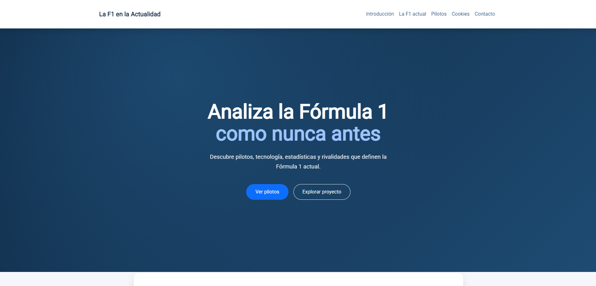
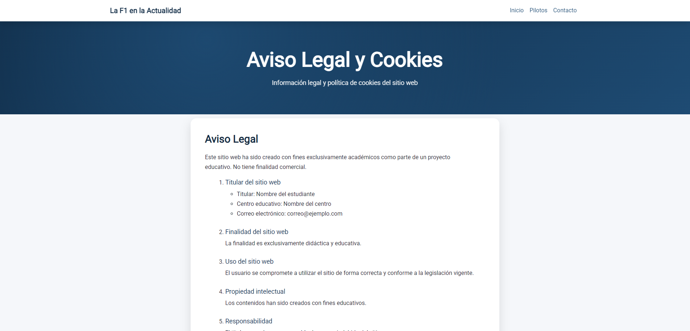
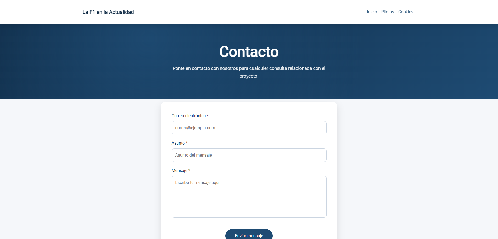
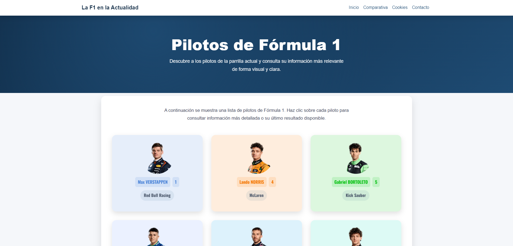
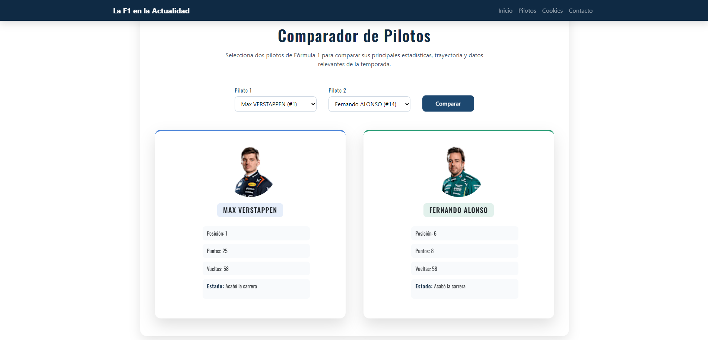

F1 Project

Este fue mi proyecto para el primer bloque del máster que actualmente estoy cursando, donde teníamos que poner en práctica los conocimientos adquiridos de HTML, CSS y JS, pudiendo también utilizar BootStrap.
Teníamos que realizar obligatoriamente una página de cookies que tenía que ser aceptada para poder seguir visitando el resto de la página, como muestro en la siguiente imagen.

Y también una página de contacto que se muestra ahora.

Lo siguiente, era una página con todos los pilotos que hay actualmente en la parrilla de la F1, utilizando la API de OpenF1, que es gratuita, pero tiene una desventaja, cada vez que haya una sesión en activo, no se podrá acceder a la API a no ser que deposites dinero.

Por último, el comparador de los resultados de la última carrera de dos pilotos a seleccionar, por ejemplo en la imagen siguiente, comparamos los resultados de Verstappen con los de Alonso.
